| Using Fedora Packager for Eclipse | ||
|---|---|---|
|
|
|
|
| Getting Started as Maintainer for a New Fedora Package | Feedback/Reporting Bugs | |
Before continuing with this part, make sure you have read our initial setup instructions . Moreover, please make sure your FAS SSH keys are properly configured in Eclipse.
Most of the features of Fedora Packager for Eclipse are accessible via its context menu or keyboard short-cuts. The richest context menu is available if you imported a Fedora Git package. A subset of this functionality is also available for Fedora RPM projects. The former is intended for Fedora package maintainers and the latter is useful for creating a new Fedora package, which is not yet part of the Fedora distribution.
Context Menu
The Fedora Packager context menu should be available if you:
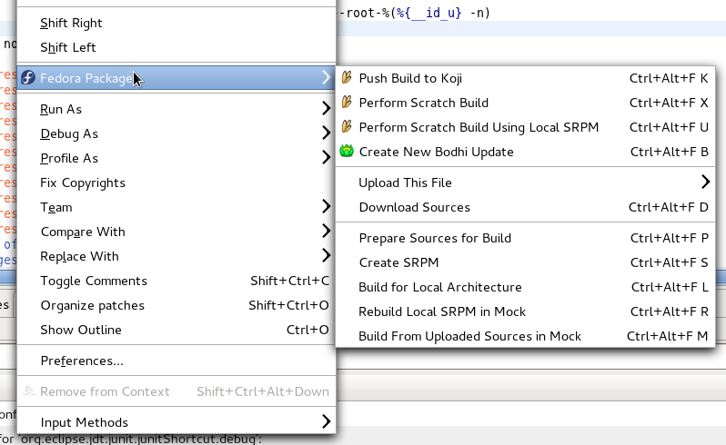
Available Keyboard Short-Cuts
As of Fedora Packager 0.2 available Fedora Packager for Eclipse actions have corresponding keyboard short-cuts. All available short-cuts are shown if you press CTRL+ALT+F. Note that keyboard short-cuts work on the package which is associated with the currently open .spec file (with the exception of importing a new Fedora Git package, CTRL+ALT+F I.
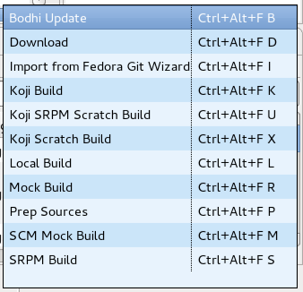
Fedora Packager for Eclipse Actions
The following table describes all Fedora Packager for Eclipse commands in more detail.
| Context Menu Item | Command Name (as shown when CTRL+ALT+F was pressed) |
Keyboard Short-Cut | Description |
|---|---|---|---|
| Push Build to Koji | Koji Build | CTRL+ALT+F K |
Pushes a regular build to Koji. Checks if there are unpushed changes in the local Git repository prior pushing the build. The build will create an SRPM based on what has been committed and pushed to the Fedora Git repository as well as based on the sources which have been uploaded to the lookaside cache. The target is determined based on the current branch (e.g. master, f15, etc). Once a build has been pushed and was successful, the package will get tagged and will become automatically available in the next Fedora release. |
| Perform Scratch Build | Koji Scratch Build | CTRL+ALT+F X |
Pushes a scratch build to Koji. Very similar to the above. Checks if there are unpushed changes in the local Git repository prior pushing the build. Scratch builds won't get tagged, though. |
| Perform Scratch Build Using Local SRPM | Koji SRPM Scratch Build | CTRL+ALT+F U |
Pushes a scratch build to Koji. Koji will use the provides SRPM for the build (i.e. it won't use anything from the Fedora Git repository or lookaside cache. As with all scratch builds, it won't get tagged. |
| Create New Bodhi Update | Bodhi Update | CTRL+ALT+F B |
Pushes builds which are available in Koji as an update. Updates will usually get pushed to testing and will move to the stable repository. This action checks if there are unpushed changes on the current branch and may prompt for the SSH passphrase as well as for your Eclipse secure storage master password should you have requested Eclipse to store your Bodhi password on a previous update push. It will validate your FAS credentials prior presenting you with the update dialog. The list of builds will get populated with the binary RPMs which the current .spec file produces (again, the Fedora release is based on the currently checked out branch). Additional builds to get pushed as a single update may be added manually. |
| Upload This File => Add to existing sources | N/A | N/A | Uploads the currently selected file (the file on which the right-click occurred) to the lookaside cache. Appends an entry to the sources file. Only archive files should get uploaded to the lookaside cache. No text files are permitted such as .spec, .xml, .patch, etc. Add, commit and push them to the Fedora Git repository instead. |
| Upload This File => Replace existing sources | N/A | N/A | Uploads the currently selected file (the file on which the right-click occurred) to the lookaside cache. Replaces any existent content in the sources file (i.e. the uploaded file will be the only entry). Only archive files should get uploaded to the lookaside cache. No text files are permitted such as .spec, .xml, .patch, etc. Add, commit and push them to the Fedora Git repository instead. |
| Download Sources | Download | CTRL+ALT+F D |
Downloads all files as listed in the sources file from the lookaside cache. Does not download files again if already existent in the relevant folder, unless its MD5 checksum mismatches with what's in the sources file. |
| Prepare Sources for Build | Prep Sources | CTRL+ALT+F P |
Execute the %prep section in the .spec file. This will download sources from the lookaside cache if sources are not yet in the containing folder. Note that this behaviour is slightly different for a Fedora RPM project, since downloading from the lookaside cache is not applicable in this case. |
| Create SRPM | SRPM Build | CTRL+ALT+F S |
Create an SRPM based on the current snapshot of the .spec file and the current Git branch one is on. This will download sources from the lookaside cache if sources are not yet in the containing folder. Note that this behaviour is slightly different for a Fedora RPM project, since downloading from the lookaside cache is not applicable in this case. |
| Build for Local Architecture | Local Build | CTRL+ALT+F L |
Build binary RPMs based on the current snapshot of the .spec file and the current Git branch one is on. This will download sources from the lookaside cache if sources are not yet in the containing folder. Note that this behaviour is slightly different for a Fedora RPM project, since downloading from the lookaside cache is not applicable in this case. |
| Rebuild Local SRPM in Mock | Mock Build | CTRL+ALT+F R |
Rebuild the SRPM which has to be specified by the user in a mock chroot based on the current Git branch one is on. |
| Build From Uploaded Sources in Mock | SCM Mock Build | CTRL+ALT+F M |
Rebuild the package in a mock chroot based on the current Git branch one is on. This will only use sources as they are available in the pushed Fedora Git repository and the lookaside cache. This won't work if the machine is offline. |
| Import SRPM To Repository | SRPM Import | CTRL+ALT+F O |
Takes an SRPM specified by the user, extracts its contents into the current branch, replaces the existing sources in the lookaside cache with the extracted source files, and stages any changes made to the Git repository. |
As mentioned earlier, as of Fedora Packager for Eclipse 0.2 there are two options for creating Fedora packaging projects:
First, we'll describe how Fedora Packager for Eclipse can be used for creating a new Fedora package. This is handy if you decided to become a new package maintainer (never packaged something for Fedora before) and would like to submit a package for review. It is also useful for existing package maintainers who would like to introduce a new Fedora package. If you'd like to become a new package maintainer, the Fedora RPM Project option of Fedora Packager for Eclipse 0.2, will help you walking you through the process and will make some parts of it easier for you. For existing packager this will help expediting SRPM creation and submitting it for review.
Note! This option should only be used if the software you'd like to package is not yet part of the Fedora distribution. If it is already part of Fedora, follow instructions here.
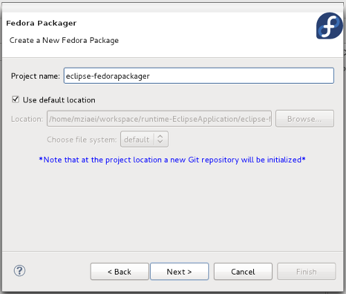
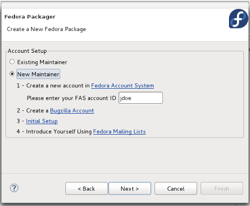
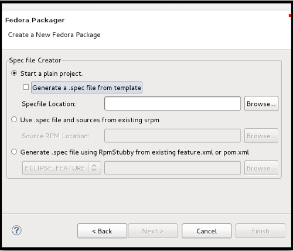
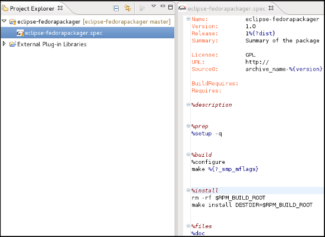
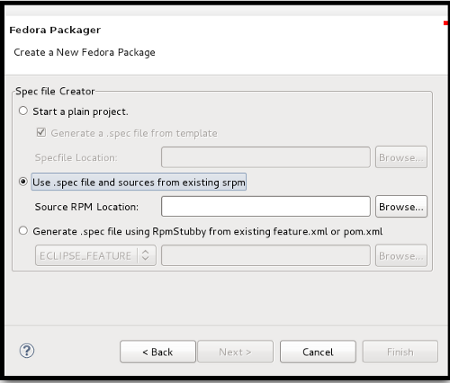
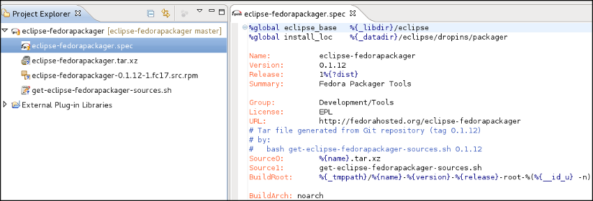
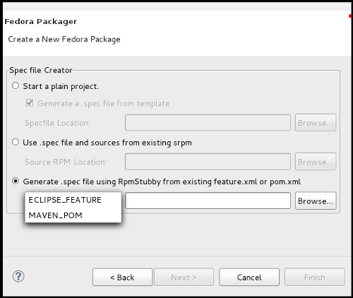
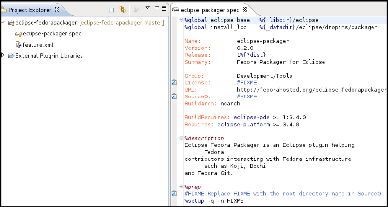
Your project will be a local Git repository which has been initialized with the Specfile. The new repository will be automatically opened in the Git Repository View as part of the Fedora Packager Perspective.
Now, you can use Fedora Packager's context menu From the main Context Menu. Few commands as is shown in this screen-shot are available to the local project to enable you to locally build your package:
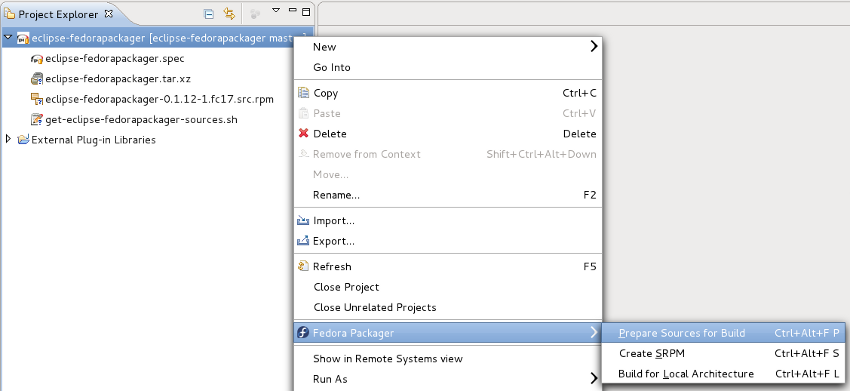
Once you are a sponsored Fedora packager you can import Fedora Git packages as follows. Before doing so make sure you've run fedora-packager-setup and configured your FAS
SSH keys in Eclipse.
CTRL+ALT+F I
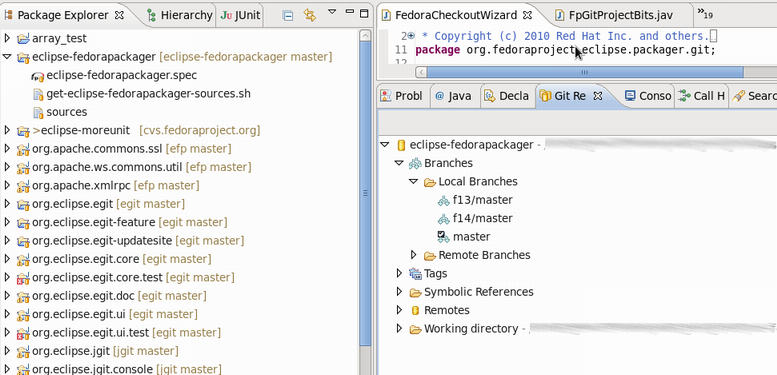
After a Fedora Git project has been created, all files required for packaging the desired release can be found in the created Eclipse project directly. For example, files for release Fedora 13 correspond to files present in the Eclipse project, once switched to branch
f13. Files in branch
master correspond to
Fedora rawhide, the current development release of Fedora. All the development should be done in this branch and once it's done you can
checkout to another desired branch and
rebase that branches on top of
master. Then push them together to the upstream.
The following is a brief description of things to consider doing while packaging up some software.
sources file to contain a single line with the MD5 sum of the file selected.
$ fedora-cert -n
To download the required source files for an existing package in order to build it:
sources.
Fedora Packager for Eclipse uses the RPM Specfile Editor and ChangeLog plug-in from the
Eclipse Linux Tools project.
For instance, a new ChangeLog Entry can easily be created in the .spec file by using the Ctrl+Alt+c keyboard shortcut or by clicking
Edit >
ChangeLog Entry (though a good idea is to set appropriate
ChangeLog Preferences
first). Also, rpmlint can be run by right-clicking on the .spec file and selecting
Run Rpmlint.
For more information have a look at the
.spec file editor screen-cast, or at the
Specfile Editor User Guide.
After the .spec file, patches, etc. have been added/changed, commit those changes to the repository. This is done by:
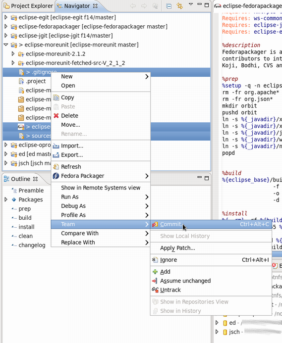
Switching branches is as easy as double-clicking on the desired local branch to be worked on.
Fedora Packager for Eclipse will download and prepare sources for building a package.

This is a great way to test if the .spec file actually builds at all. Once the RPM has been successfully built locally, it is recommended further testing be carried out on the .spec file by completing a build in a chroot environment using mock. Both ways are supported by Fedora Packager for Eclipse.
Using mock to build your package is a great way to verify that you have the correct BuildRequires in a .spec file.
When you are satisfied with your locally-committed changes, you are ready to publish them publicly. Remember, if you made any mistake in your commits, Git allows history to be rewritten before changes are made public. See the
Git and
EGit documentation for more information.
To bring the local repository in sync with the remote repository (which is by default called
origin):

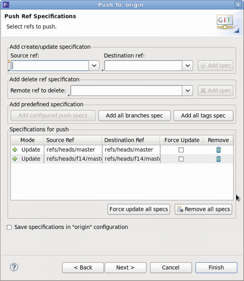
As of Fedora Packager for Eclipse 0.2 there are three different options of pushing a build to Koji.
Using the former two is straight forward. Just keep in mind to Git-push local changes before your trigger either one of the two.

The third option works a bit differently, so we'll focus on it. Pushing a scratch build for which the user specifies the SRPM works as follows:
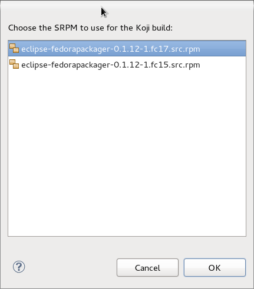
After either one of the three Koji builds has been triggered, Eclipse will pop up a message dialog containing the Koji URL to track the pushed build. Here is an example of how the message may look:

Also note that there will be a log entry in the Eclipse Error Log view detailing the Koji-Web URL of the pushed task as well. If you click on the provided URL, a browser tab will open in Eclipse showing you the status of the pushed build. Refresh it in order to follow build progress. As of yet, Fedora Packager for Eclipse does not support chain builds.
Fedora Packager for Eclipse can be used to push Bodhi updates as well. For example you can use keyboard short-cut CTRL+ALT+F B or the context menu to trigger this action (
Fedora Packager >
Create New Bodhi Update). Before you push a Bodhi update, make sure that all relevant builds have been pushed to Koji. If you attempt to push an update for a build which does not exist, the Bodhi update will fail. The recommended steps prior pushing a Bodhi update are:
After step three the following actions are carried out by the Bodhi update action of Fedora Packager for Eclipse:
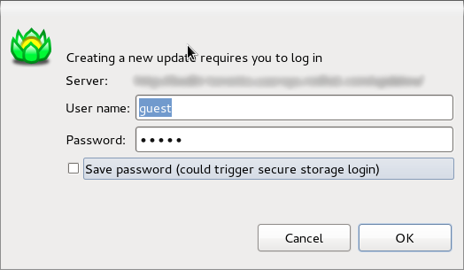
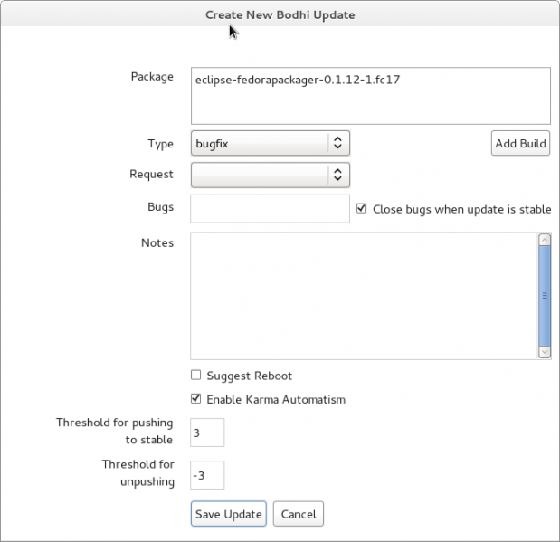
Arbitrary additional builds may be added to the list of builds via the Add Builds button.
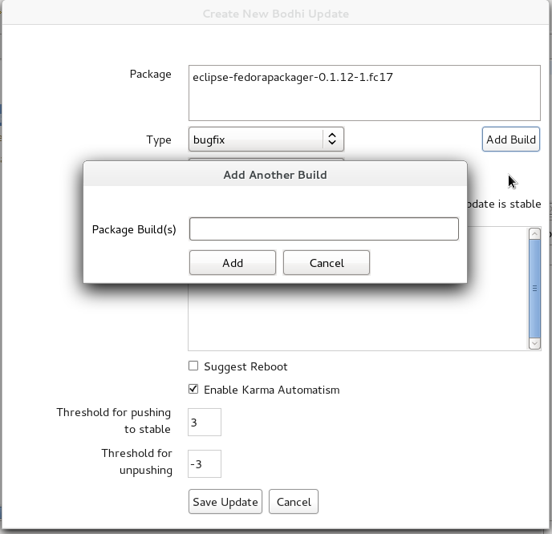
In order to push the update select relevant builds in the dialog (use CTRL+Click to select multiple builds) you'd like to push an update for, choose the update type, provide the request type, add an advisory comment for the update and click
Save Update. If the Bodhi update was successfully pushed, Fedora Packager for Eclipse will show you a message dialog with a link to an URL where the progress of the update can be tracked.
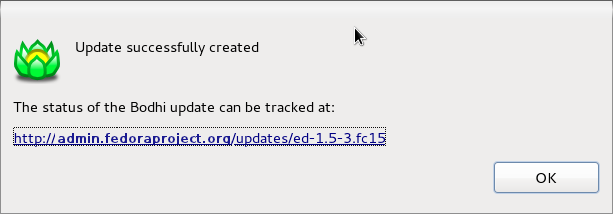
Before you get started with importing packages from Fedora Git, you should have your FAS SSH keys set up in Eclipse. You should do this because if Fedora Packager for Eclipse finds a ~/.fedora.cert file, it will use an SSH based clone URL with your FAS username extracted from this certificate. Note that you'll have the option of cloning anonymously anyway.
Unfortunately, Eclipse can't use your ssh-agent. Our believe is that this is because Eclipse has to run on several platforms (not just Eclipse). Since UNIX sockets are platform dependent, this may be be reason why Eclipse can't use it.
Eclipse SSH Preferences
Press CTRL+3, type "SSH2" and hit return. This should bring you to the following page:
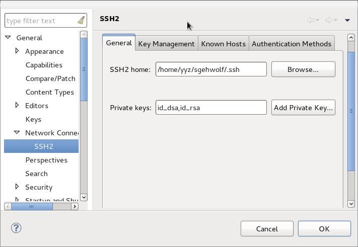
Make sure that your FAS SSH key is listed there and you can successfully unlock your key.
|
|

|
|
| Getting Started as Maintainer for a New Fedora Package | Feedback/Reporting Bugs |